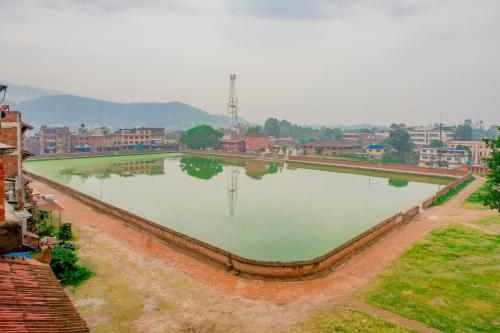
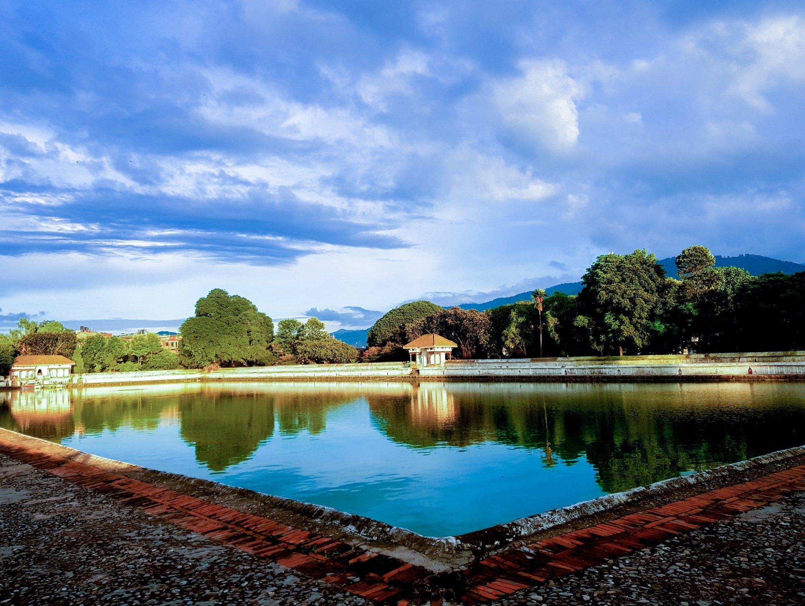
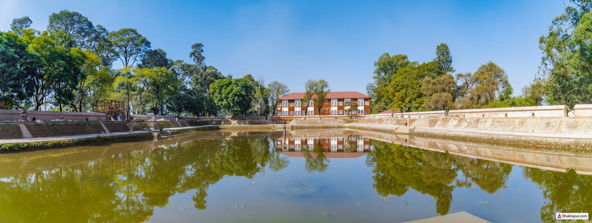
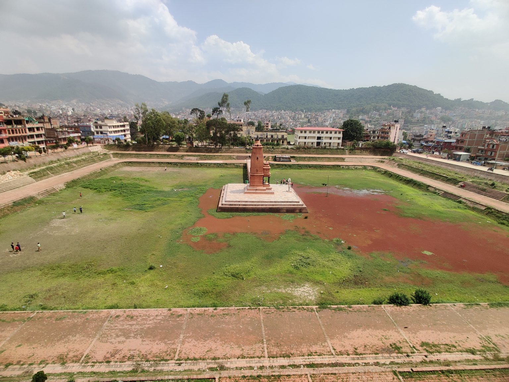
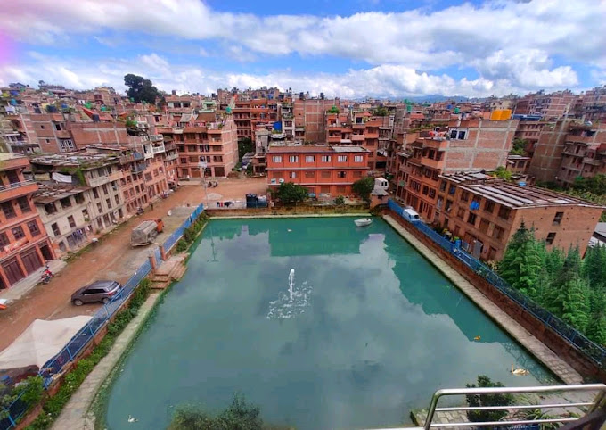
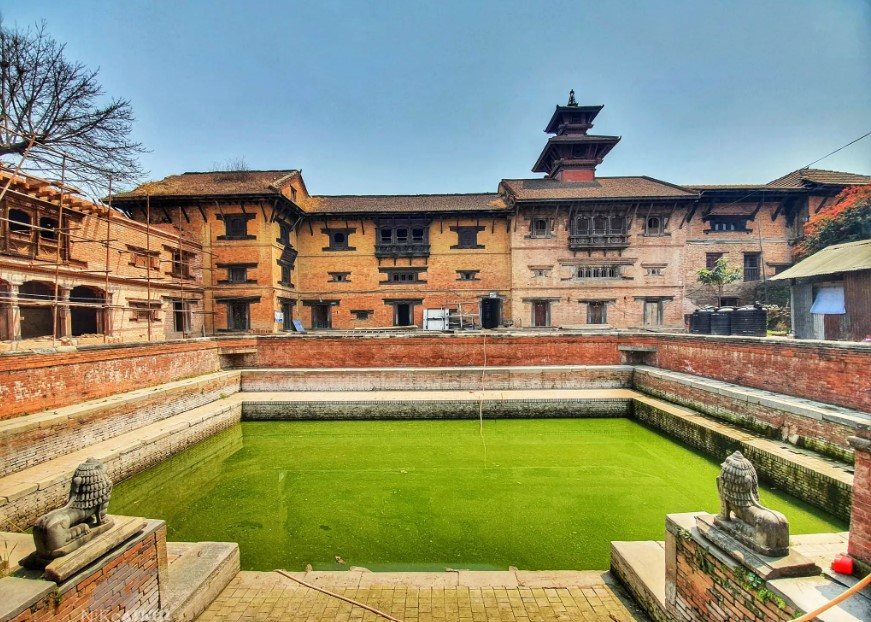
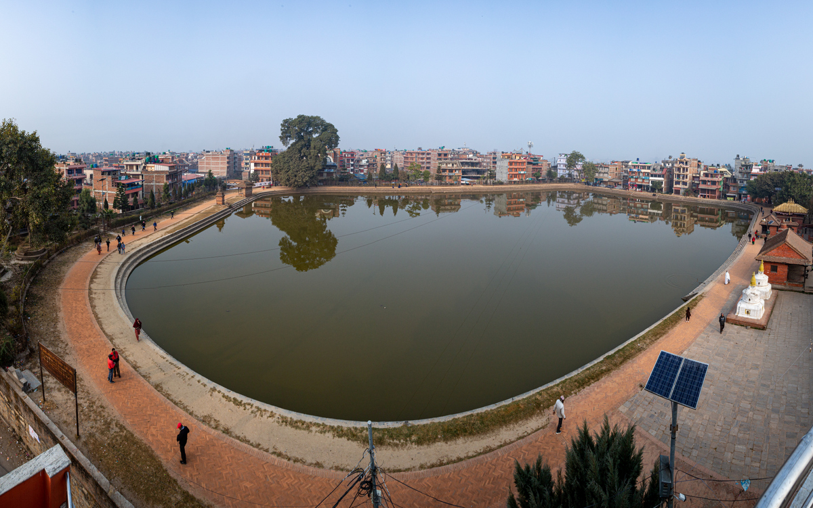
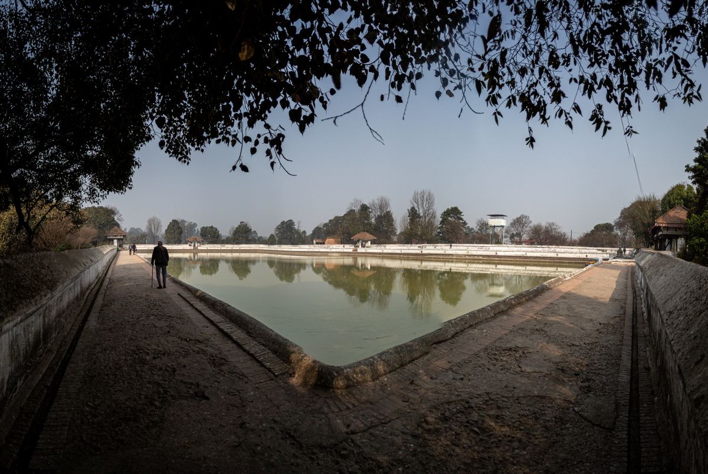
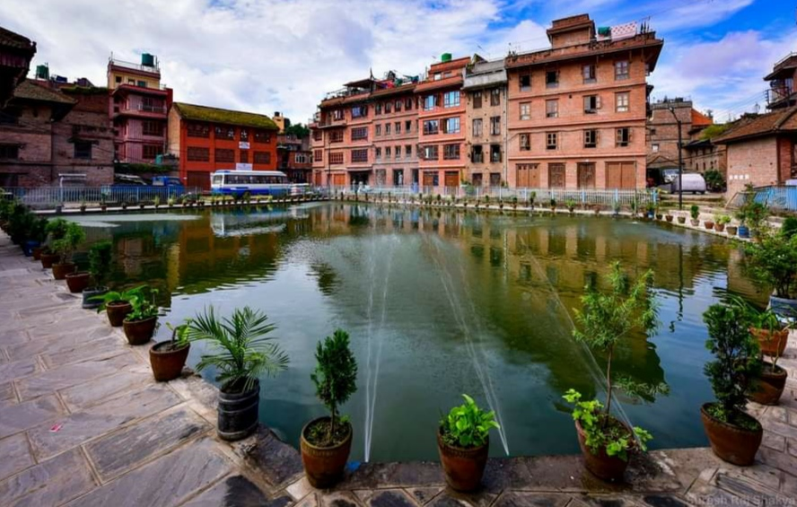

Pond's |
||
NAPUKHUone of the opend pond of the inner city,located at the west part of bhaktapur,at way to the bhaktapur durbar square,it shape like an oval. |
SIDDHA POKHARISiddha Pokhari is an artificial rectangular pond located at Bhaktapur. It is one of the old and traditional ponds in Nepal. It was built in the 15th century during the rule of King Yakshya Malla. Siddha Pokhari is also called by the name Ta-Pukhu according to native people. it is one of the most beautiful white pond in bhaktapur. |
RANI POKHARIThere is a Ranipokhari in Bhaktapur. Most people might have had no idea about this historic pond’s existence before the issue of its reconstruction. The mighty pond is said to be 40 years older than the Ranipokhari of Kathmandu. That’s why the Ranipokhari of Kathmandu used to be called “Nhu Pukhu “ which means the New pond. However, this Ranipokhari of Bhaktapur is not as big as Kathmandu’s. |
 BHAJYA PUKHUBhajyapukhu or Bhajupokhari of Bhaktapur is recently renovating under the act of Bhaktapur Municipality. This pond seems like a hidden pond of Bhaktapur cause it is labelled beside the line of various restaurants and local residences. But it is very easy to locate this pond. It lies right behind the Shiddhapokhari of Bhaktapur, on the southern arena. All you need to do is cross the road toward the south of Shiddhapokhari. Make the traditional pati to your right( which has a small outdoor shop) and keep going. Within a few steps, you would be standing on the northeast corner of the Bhajupokhari. |
 YATA PUKHUOne of the oldest pond in bhaktapur located near by golmadi tole. |
|
BHANDA PUKHU |
||
KAMAL POKHARIAnother biggest pukhu(pond) in bhaktapur valley. The only ponds with no bar or wall .freely opened |
More...> |
BHOLACHHEN pukhuNewly reconstructed pukhu in bholachhen tole.Pond with less crowd and peaceful environment. |
{kind=link}
{kind=link}
{kind=link}
{kind=link}
{kind=link}
{kind=link}
{kind=link}
{kind=link}